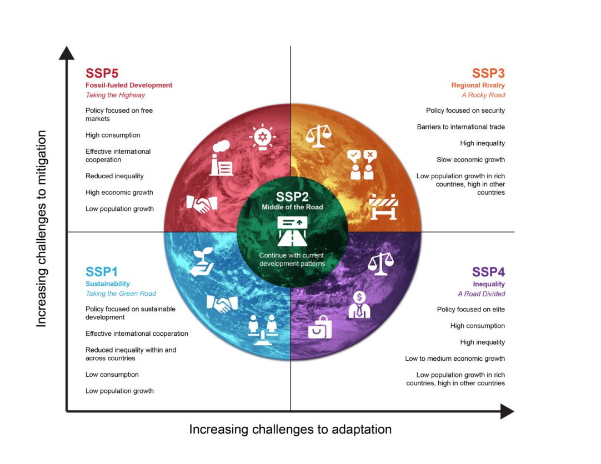
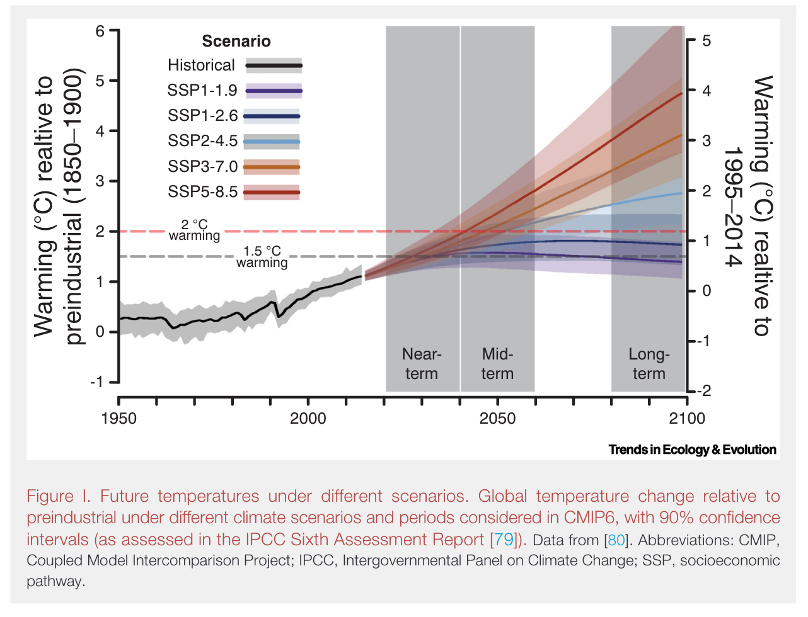
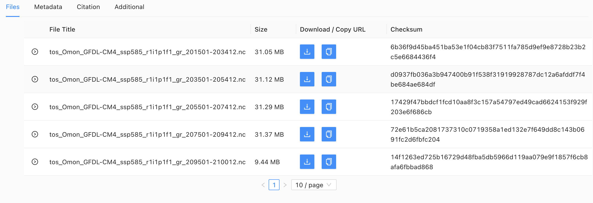

3 Understanding Climate Models: The CMIP Framework
3.1 What is a climate model? (in one picture)
At its core, a climate model divides the Earth into a 3-D grid (latitude–longitude horizontally, levels vertically) and steps forward in time. In each grid cell the model tracks key state variables (e.g., temperature, humidity, winds, ocean currents, salinity, sea ice, carbon), and exchanges fluxes (heat, water, carbon) between neighboring cells and across components (atmosphere ↔︎ ocean ↔︎ land ↔︎ ice).
- Resolution: Typical global models use ~1° (~100 km) horizontal grids with tens of vertical levels
- Components: Many models are full Earth System Models (
ESMs) that include biogeochemistry (e.g., carbon cycle), not just physics - Outputs: Results are multi-dimensional arrays saved as
NetCDFfiles (variable × lon × lat × depth × time)
Why many models? Different groups make different (reasonable) choices in numerics and physics, so we compare them within the CMIP framework (Schoeman et al. 2023).
Note
Projection, not prediction: Models run “what-if” scenarios (e.g., different emissions pathways). They tell us about plausible futures, not a single forecast for an exact day.
3.2 What the hell are CMIP6?
CMIP6 stands for Coupled Model Intercomparison Project – Phase 6.
These are large-scale simulations of the Earth system that bring together dozens of research centers around the world. Each model represents the physical, chemical, and, in some cases, biological processes of our planet’s atmosphere, oceans, land, and cryosphere — the “big four” of climate (Schoeman et al. 2023)
The IPCC Fifth Assessment Report (AR5, 2013) was based on CMIP5, while the Sixth Assessment Report (AR6, 2021) uses CMIP6, which offers improved spatial resolution, new biogeochemical modules, and more realistic feedbacks among Earth-system components.
The main goal of CMIP is to explore plausible futures of the climate system under different greenhouse-gas and aerosol trajectories. Each model run represents a “what-if” experiment — what if emissions rise, stabilize, or decline?
Why CMIP matters (and why we spent a year writing about it)
CMIP models underpin nearly every modern climate projection — from future sea-surface warming to biodiversity redistribution.
If you’ve ever used temperature or oxygen projections in ecology, you’ve indirectly used CMIP data.
(And yes — this section owes more than a little to that friendly review “Demystifying global climate models for use in the life sciences” – which some of us may have helped write)
The CMIP framework is not a single model, but a community experiment that standardizes how models are run and shared, ensuring that scientists can compare results across modeling centers. These datasets are freely distributed through the Earth System Grid Federation (ESGF), which makes them available for research and teaching.
The CMIP6 “MIPs Wheel”
CMIP6 isn’t a single climate model — it’s a huge international collaboration that brings together more than 100 models from research centers around the world. These models are grouped into Model Intercomparison Projects (MIPs), each focused on a big scientific question — for example:
How do aerosols affect clouds? How does the ocean store heat and carbon? What happens under different future scenarios?
At the center of the diagram below are a few core experiments that all models run to make results comparable. The outer circles show the different MIPs, each exploring a specific part of the Earth system.
CMIP6 is what makes global climate projections possible — it provides a common framework so that results can be compared, validated, and used confidently in applied fields like ecology and conservation.
As we explain in (Schoeman et al. 2023), the system might look complicated, but it’s what lets us link global climate science to questions about where and how species — and ecosystems — will respond to change.
3.3 CMIP6 Experimental Design: Climate Scenarios
Climate models explore possible futures — not predictions, but scenarios that describe how society might develop and how that would influence greenhouse gas emissions.
In CMIP5, these were called RCPs (Representative Concentration Pathways)
In CMIP6, they evolved into SSPs — Shared Socioeconomic Pathways — which combine both human and physical dimensions of climate change

Each SSP represents a different world:
- SSP1 – Sustainability: a “green road” with strong climate action
- SSP2 – Middle of the Road: current trends continue
- SSP3 – Regional Rivalry: fragmented world, high emissions
- SSP4 – Inequality: growing divide between rich and poor regions
- SSP5 – Fossil-fueled Development: rapid economic growth, very high emissions
When these socioeconomic pathways are combined with different levels of radiative forcing (how much energy the atmosphere traps), we can simulate a wide range of future climates.

As shown above, temperature projections under the SSPs diverge sharply by mid-century.
For example, SSP1-2.6 keeps warming below 2 °C, while SSP5-8.5 exceeds 4 °C by 2100 — a reminder that the choices societies make now shape the climate future we’ll experience.
3.4 Downloading CMIP6 Model Data
In this section, you’ll learn how to find and download real climate model outputs from CMIP6 — the same datasets used by the IPCC in its latest assessment reports.
These files will form the foundation for your assignment, where you’ll visualize and analyze global sea surface temperature (tos) under a future climate scenario.
3.4.1 1. Create an ESGF Account
CMIP6 data are freely available through the Earth System Grid Federation (ESGF) — a global network of data centers that archive Earth System Model outputs.
To download data, create an account following the official guide: https://esgf.github.io/esgf-user-support/user_guide.html.
(You can browse without logging in, but you’ll need an account to download)
3.4.5 5. Understanding File Names
CMIP6 files follow a standard naming convention, e.g.: tos_Omon_GFDL-ESM4_ssp585_r1i1p1f1_gr_201501-203412.nc
| Part | Meaning |
|---|---|
tos |
Sea surface temperature |
Omon |
Monthly ocean output |
GFDL-ESM4 |
Model name |
ssp585 |
Future scenario (high emissions) |
r1i1p1f1 |
Ensemble member (run/physics/forcing setup) |
gr |
Grid label (regridded) |
201501–203412 |
Time period covered |
3.4.6 6. Downloading the File
- Click List Files next to your chosen model entry.
- A table will list several .nc files, each covering ~20 years.
- Click HTTP Download for one file (e.g., 2015–2034).

Each file is ~130 MB. Do not download all time periods — one file is enough for this assignment.
Assignment Hint
Use this setup: - Model: GFDL-ESM4 - Scenario: ssp585 - Variable: tos (sea surface temperature) - Period: 2015–2034 You’ll use this file in the next section to open, visualize, and analyze global SST in R. Pro tip: Start filtering by variable — it’s the quickest way to narrow the search.
Assignment Hint
No downloads? Make sure you’re logged into ESGF.
Empty results? Clear filters and re-apply Variable → tos first.
Slow/failed download? Try another ESGF node mirror listed under “Download Options”